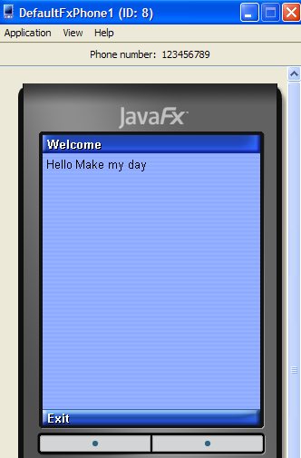

`
Guia de início rápido do desenvolvimento de MIDP em Java ME - Tutorial do NetBeans IDE
Guia de início rápido de desenvolvimento Java ME MIDP
Este tutorial guia você através das etapas básicas da utilização do NetBeans IDE para criar uma plataforma Java™, Micro Edition (plataforma Java™ ME), aplicativo Perfil de dispositivo de informação móvel (MIDP) e é desenhado para iniciar o desenvolvimento do aplicativo móvel mais rápido possível. O tutorial a seguir o orienta através de algumas etapas básicas do trabalho com o sistema de projeto. Nós mostramos duas maneiras de criar um projeto Java ME MIDP chamado "MyHello" que exibe o texto "Make My Day" em um emulador de dispositivo. Este tutorial preparar você para usar outros recursos do IDE para o desenvolvimento de aplicativos CLDC/MIDP.
Observação: o emulador agrupado com o IDE varia dependendo de qual instalador de sistema operacional foi baixado.
A distribuição do Windows do NetBeans 6.7 e posterior vêm agrupado com o Java ME SDK 3.0.
A distribuição do Linux do NetBeans IDE está agrupado com o Sun Java Wireless Toolkit 2.5.2.
A versão MacOS X do NetBeans 6.9 está agrupada com o Java ME SDK 3.0 para CLDC.
Criando um aplicativo MIDP utilizando o Visual Mobile Designer
O NetBeans IDE fornece um assistente que permite que você crie rapidamente um projeto MIDP. Ao criar o projeto, você pode optar por desenvolver a aplicação no Visual Mobile Designer (VMD) ou no editor de código-fonte. Utilizar o VMD fornece a habilidade de planejar visualmente o fluxo do aplicativo e o desenho da tela nas utilizações do aplicativo. O projetista cria automaticamente o código para o aplicativo conforme as alterações são salvas na tela de desenho.
Criando uma aplicação MIDP/CLDC
Escolha Arquivo > Novo projeto (Ctrl+Shift+N). Em Categorias, selecione Java ME. Em Projetos, selecione Aplicativo móvel e clique em Próximo.
Insira MyHello no campo Nome do projeto. Use a localização de projeto padrão ou altere-a para o diretório de sua preferência no sistema. Neste tutorial, esse diretório é definido como $PROJECTHOME.
Marque as caixas de verificação Definir como projeto principal e Criar Hello MIDlet (ambas estão marcadas por padrão). Clique em Próximo.
Selecione o padrão como a plataforma do emulador e utilize os padrões restantes. Clique em Terminar.
O IDE cria a pasta do projeto $PROJECTHOME/MyHello. A pasta do projeto contém todos os códigos-fonte e os metadados do projeto, como o script Ant do projeto. A própria aplicação é exibida na janela Design de fluxo do Visual Mobile Designer.
Em HelloMIDlet.java clique em Tela para mostrar a janela Projetista de tela exibindo a Tela do dispositivo, que é a única tela disponível no aplicativo.
Clique na mensagem Hello World! na tela do dispositivo. Na janela Propriedades, clique no texto Hello World! para modificar a mensagem e pressione Enter. Neste exemplo, digitamos Make my day.
A visualização Tela exibe o texto inserido no campo Texto.
Compilando e executando o projeto
Selecione Executar > Executar projeto principal (F6) no menu Executar). Siga o progresso da compilação do projeto na Janela de saída. Observe que o arquivo HelloMIDlet.java é construído antes de ser executado. Um emulador de dispositivo é aberto para exibir os resultados do MIDlet executado. O emulador de dispositivo inicia o MIDlet e exibe o texto inserido no código-fonte.
Dica: é possível especificar o emulador para executar o MIDlet ao clicar com o botão direito do mouse no nó do projeto e selecionar Executar com... do menu contextual. O DefaultFXPhone1 disponível no Java ME SDK 3.0 é mostrado abaixo.

Clique no botão abaixo de Sair para fechar o MIDlet. Em seguida, clique no botão no canto superior direito do dispositivo para fechar a janela do emulador.
Criando uma aplicação MIDP usando o editor de código-fonte
Usando o Editor de código-fonte, crie manualmente o código para os MIDlets. Ao criar o código no Editor de código-fonte, você tem mais flexibilidade ao editar o código e pode inserir blocos do código do pré-processador. Em seguida, criamos o aplicativo MyHello usando os assistentes para Novo projeto e Novo arquivo e completaremos o código usando o editor de código-fonte.
Criando um novo projeto Java ME MIDP
Escolha Arquivo > Novo projeto (Ctrl-Shift-N). Em Categorias, selecione Java ME. Em Projetos, selecione Aplicativo móvel e clique em Próximo.
Digite MyHelloMIDlet no campo Nome do projeto (observe que "MID" é em maiúsculas). Especifique o local do projeto que é diferente do local do projeto MyHello criado anteriormente. Fazemos referência a este diretório como $PROJECTHOME neste tutorial.
Marque a caixa de verificação Definir como projeto principal e desmarque a caixa Criar Hello MIDlet. Clique em Próximo.
Selecione a plataforma do emulador padrão e utilize os padrões restantes. Clique em Terminar.
O IDE cria a pasta do projeto $PROJECTHOME/MyHelloMIDlet. A pasta do projeto contém todos os códigos-fonte e os metadados do projeto, como o script Ant do projeto.
Clique com o botão direito do mouse no nó MyHelloMIDlet na janela do Explorer e escolha Novo > MIDlet.
Insira HelloMIDlet como o nome do MIDlet (observe que "MID" não está em maiúsculas por padrão). Clique em Terminar. O arquivo HelloMIDlet.java é criado e o código-fonte é exibido na janela Editor do IDE.
Clique no Editor de código-fonte e altere
public class HelloMIDlet extends MIDlet
para
public class HelloMIDlet
extends MIDlet implements javax.microedition.lcdui.CommandListener
{
Adicione o seguinte texto antes do método startApp():
private void initialize() {
javax.microedition.lcdui.Display.getDisplay(this).setCurrent(get_helloTextBox());
}
public void commandAction(javax.microedition.lcdui.Command command, javax.microedition.lcdui.Displayable displayable) {
if (displayable == helloTextBox) {
if (command == exitCommand) {
javax.microedition.lcdui.Display.getDisplay(this).setCurrent(null);
destroyApp(true);
notifyDestroyed();
}
}
}
private javax.microedition.lcdui.TextBox get_helloTextBox() {
if (helloTextBox == null) {
helloTextBox = new javax.microedition.lcdui.TextBox(null, "Hello Test Code", 120, 0x0);
helloTextBox.addCommand(get_exitCommand());
helloTextBox.setCommandListener(this);
}
return helloTextBox;
}
private javax.microedition.lcdui.Command get_exitCommand() {
if (exitCommand == null) {
exitCommand = new javax.microedition.lcdui.Command("Exit", javax.microedition.lcdui.Command.EXIT,
1);
}
return exitCommand;
}
javax.microedition.lcdui.TextBox helloTextBox;
javax.microedition.lcdui.Command exitCommand;
Adicione uma linha initialize(); ao método startApp() para que tenha a seguinte aparência:
public void startApp() {
initialize();
}
Editando o código-fonte Java
Agora, vamos adicionar texto ao MIDlet para exibição.
No método get_helloTextBox(), substitua o código de exemplo, "Hello Test Code" com um texto a sua escolha. Por exemplo, "Faça meu dia."
Compilando e executando o projeto
Selecione Executar > Executar projeto principal (F6) no menu Executar). Siga o progresso da compilação do projeto na Janela de saída. Note que o arquivo HelloMIDlet.java é construído antes de ser executado. Um emulador de dispositivo abre para exibir os resultados do MIDlet executado e exibe o testo inserido no código fonte.